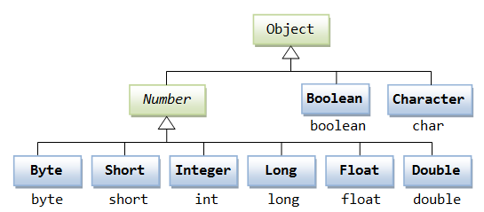
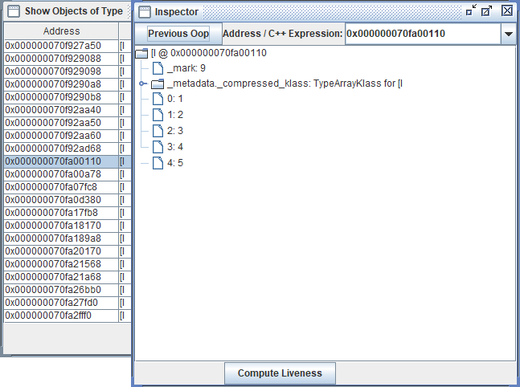

从1990的Oak到如今,Java已经在当前的企业级Web应用开发中占据了举足轻重的地位,因此也成了每一个软件开发者的必由之路。回溯编程语言的发展,从C语言的诞生到20世纪90年代左右C++,Python,Java,PHP,JavaScrip的先后涌现,再到21世纪Go,Rust,Kotlin等编程语言的诞生,编程语言的发展也呈现螺旋上升状态,不同语言在前人的基础上针对性能,功能以及使用上做出了不同的改进和拓展。因此也就不存在所谓的最好的编程语言,只有合适的编程语言。(如果硬要选择一个最好的编程语言,我选择汇编语言,毕竟让Java来选,顶级父类的含金量不是和哥们开玩笑的)
Java前言：“一次编写,到处运行”,没错,就是到处运行,上过太空也去过火星那种。不过在这一方面,Java确实独树一帜,另外针对C++的一些缺点,Java直接舍弃了指针,添加了垃圾回收机制(GC),并且不同于一般的编译语言或解释型语言,Java既编译也解释。来看Sun公司对Java语言的解释：“Java编程语言是个简单、面向对象、分布式、解释性、健壮、安全、与系统无关、可移植、高性能、多线程和动态的语言”。一看怎么全是优点,其实背后主要是得益于Java虚拟机(JVM)。学习Java,JVM是绕不过的一大门槛,但只要深入了解,你还是会赞叹它的神奇之处。
一、基本数据类型(四类八种)
在Java中除基本数据类型以外，还有引用数据类型，他们的区别在于前者将数据的值保存于栈中，可以在数据大量访问时提供较快的速度。而后者将对象的内存地址保存在堆中，虚拟机通过垃圾回收机制进行管理，并且其内存大小可动态调整以满足复杂的数据结构需求。
1.整形类型
| 数据类型 | 大小 | 定义方法 |
|---|---|---|
| byte | 1字节(8Bit) | Byte b = 0; |
| short | 2字节 | short s = 0; |
| int | 4字节 | int i = 0; |
| long | 8字节 | long l = 0; |
| float | 4字节 | float f = 1.00F; |
| double | 8字节 | double d = 2.00D; |
| char | 2字节 | char c = ‘a’; |
| boolean | 通常为1字节 | boolean b = false; |
在Java中，以上八种类型对应的包装类从上到下分别为Byte、Short、Integer、Long、Float、Double、Character、Boolean。除int和char以外，其他均为首字母大写的形式。包装类的目的在于将数据以对象的形式进行操作,默认值为null,由于包装类已经重写了toString方法，所以在直接打印时仍会直接显示对应的值。

基本数据继承关系-空心箭头代表泛化(继承关系).菜鸟教程
二、字符串
| 特性 | String | StringBuilder | StringBuffer | StringJoiner |
|---|---|---|---|---|
| 可变性 | ❌ 不可变 | ✅ 可变 | ✅ 可变 | ✅ 可变（内部Builder） |
| 线程安全 | ✅（天生安全） | ❌ 非线程安全 | ✅（synchronized） | ❌（非线程安全） |
| 性能 | 低（频繁修改时） | 最高（单线程） | 中等（同步开销） | 高（专用场景） |
| 设计目的 | 存储常量字符串 | 高效单线程修改 | 安全多线程修改 | 分隔符拼接 |
| JDK 版本 | 1.0 | 1.5 | 1.0 | 1.8 |
String：
1 | String s = "Hello"; |
StringBuilder：
1 | StringBuilder sb = new StringBuilder(); |
StringBuffer：
1 | StringBuilder sb = new StringBuilder(); |
StringJoinner：
1 | StringBuffer sbf = new StringBuffer(); |
三、循环结构
while
while是最基本的循环，它的结构为：1
2
3while( 布尔表达式 ) {
//循环内容
}
只要布尔表达式为 true，循环就会一直执行下去。
do…while
对于 while 语句而言，如果不满足条件，则不能进入循环。但有时候我们需要即使不满足条件，也至少执行一次。
do…while 循环和 while 循环相似，不同的是，do…while 循环至少会执行一次。1
2
3do {
//代码语句
}while(布尔表达式);
注意：布尔表达式在循环体的后面，所以语句块在检测布尔表达式之前已经执行了。 如果布尔表达式的值为 true，则语句块一直执行，直到布尔表达式的值为 false。
for
虽然所有循环结构都可以用 while 或者 do…while表示，但 Java 提供了另一种语句 —— for 循环，使一些循环结构变得更加简单。
for循环执行的次数是在执行前就确定的。语法格式如下：1
2
3for(初始化; 布尔表达式; 更新) {
//代码语句
}
关于 for 循环有以下几点说明：
- 最先执行初始化步骤。可以声明一种类型，但可初始化一个或多个循环控制变量，也可以是空语句。
- 然后，检测布尔表达式的值。如果为 true，循环体被执行。如果为false，循环终止，开始执行循环体后面的语句。
- 执行一次循环后，更新循环控制变量。
- 再次检测布尔表达式。循环执行上面的过程。
增强 for 循环
Java5 引入了一种主要用于数组的增强型 for 循环。
Java 增强 for 循环语法格式如下:1
2
3
4for(声明语句 : 表达式)
{
//代码句子
}
声明语句：声明新的局部变量，该变量的类型必须和数组元素的类型匹配。其作用域限定在循环语句块，其值与此时数组元素的值相等。
表达式：表达式是要访问的数组名，或者是返回值为数组的方法。
break 关键字
break 主要用在循环语句或者 switch 语句中，用来跳出整个语句块。
break 跳出最里层的循环，并且继续执行该循环下面的语句。也可以跳出指定循环，使用 : 对循环进行声明，例如：1
2
3
4
5
6
7int i = 100;
loop : while(i > 0){
i++
while(i == 10){
break loop;
}
}
continue 关键字
continue 适用于任何循环控制结构中。作用是让程序立刻跳转到下一次循环的迭代。
在 for 循环中，continue 语句使程序立即跳转到更新语句。
在 while 或者 do…while 循环中，程序立即跳转到布尔表达式的判断语句。
四、条件语句
if…else…
Java 中的条件语句允许程序根据条件的不同执行不同的代码块。
if 语句后面可以跟 else 语句，当 if 语句的布尔表达式值为 false 时，else 语句块会被执行。
语法
if…else 的用法如下：1
2
3
4
5if(布尔表达式){
//如果布尔表达式的值为true
}else{
//如果布尔表达式的值为false
}
如果布尔表达式的值为 true，则执行 if 语句中的代码块，否则执行 else 语句块后面的代码。
if…else if…else
if 语句后面可以跟 else if…else 语句，这种语句可以检测到多种可能的情况。
使用 if，else if，else 语句的时候，需要注意下面几点：
if 语句至多有 1 个 else 语句，else 语句在所有的 else if 语句之后。
if 语句可以有若干个 else if 语句，它们必须在 else 语句之前。
一旦其中一个 else if 语句检测为 true，其他的 else if 以及 else 语句都将跳过执行。
语法1
2
3
4
5
6
7
8
9
10if...else 语法格式如下:
if(布尔表达式 1){
//如果布尔表达式 1的值为true执行代码
}else if(布尔表达式 2){
//如果布尔表达式 2的值为true执行代码
}else if(布尔表达式 3){
//如果布尔表达式 3的值为true执行代码
}else {
//如果以上布尔表达式都不为true执行代码
}
switch
switch case 语句判断一个变量与一系列值中某个值是否相等，每个值称为一个分支。
语法
switch case 语句语法格式如下：1
2
3
4
5
6
7
8
9
10
11switch(expression){
case value :
//语句
break; //可选
case value :
//语句
break; //可选
//你可以有任意数量的case语句
default : //可选
//语句
}
switch case 语句有如下规则：
switch 语句中的变量类型可以是： byte、short、int 或者 char。从 Java SE 7 开始，switch 支持字符串 String 类型了，同时 case 标签必须为字符串常量或字面量。
switch 语句可以拥有多个 case 语句。每个 case 后面跟一个要比较的值和冒号。
case 语句中的值的数据类型必须与变量的数据类型相同，而且只能是常量或者字面常量。
当变量的值与 case 语句的值相等时，那么 case 语句之后的语句开始执行，直到 break 语句出现才会跳出 switch 语句。
当遇到 break 语句时，switch 语句终止。程序跳转到 switch 语句后面的语句执行。case 语句不必须要包含 break 语句。如果没有 break 语句出现，程序会继续执行下一条 case 语句，直到出现 break 语句。
switch 语句可以包含一个 default 分支，该分支一般是 switch 语句的最后一个分支（可以在任何位置，但建议在最后一个）。default 在没有 case 语句的值和变量值相等的时候执行。default 分支不需要 break 语句。
switch case 执行时，一定会先进行匹配，匹配成功返回当前 case 的值，再根据是否有 break，判断是否继续输出，或是跳出判断。
| 列1标题|列2标题 | 列3标题 |
|-|-|-|
| 数据1| 数据2 | 数据3 |
| 数据4 | 数据5 | 数据6 |
| 数据7 | 数据8 | 数据9 |
| 数据10 | 数据11 | 数据12 |
| 数据13 | 数据14 | 数据15 |
| 数据16 | 数据17 | 数据18 |
四、数据结构
数组
1.数组创建
- int[] arrays1 = new int[10]或者int[] arrays3; arrays3 = new in[10];->创建长度为10的int类型数组
- int[] arrays2 = {0,1,2,3,4,5,6,7,8,9,};->创建时同时指定元素
2.数组内存图
数组在初始化时会在堆中创建一个空间，大小为数组的长度。数组名称会记录这个堆空间地址，并通过地址向其中添加元素。下方创建了一个长度为5的int数组。通过HSDB(HotSpot Debugger)查看数组内存：class ArraysTest { 1
2
3
4
5
6
7
8
9public static void main(String[] args) {
int[] array = {1, 2, 3, 4, 5};
try {
Thread.sleep(1000000); // 让程序保持运行状态
} catch (InterruptedException e) {
e.printStackTrace();
}
}
} - jps ->找到程序运行的端口
- jhsdb hsdb —pid 端口号 -> 打开HSDB工具

列表
ArrayList
LinkedList
集合
HashSet
TreeSet
LinkedHashSet
映射
HashMap
TreeMap
LinkedHashMap
如果您喜欢此博客或发现它对您有用，则欢迎对此发表评论。 也欢迎您共享此博客，以便更多人可以参与。 如果博客中使用的图像侵犯了您的版权，请与作者联系以将其删除。 谢谢 ！